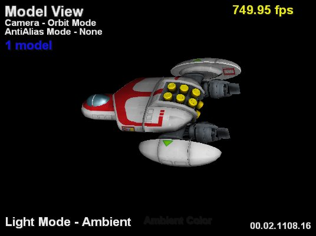
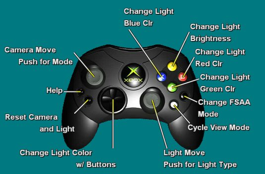

Model View mode enables the user to move the camera and lights, and change the antialiasing mode. This is the initial view when XbView is launched while previewing a 3D object in Deep Exploration. If the model is animated, Model view will show the object in the rest pose (frame 0) of the animation.

Illustration Model View. The upper-left corner shows the camera and antialiasing modes. The upper-right corner gives the frame rate. The lower-right corner gives the version number for XbView and the lower-right corner gives the light mode.
Pushing the Back button brings up the help diagram below. Pushing Back again closes the help diagram. Pushing the White button changes the mode to Resource View.

The left thumbstick controls the camera. Clicking the left thumbstick cycles through the camera modes:
Moving the left thumbstick rotates the camera around a center point. On startup, the center point is located at the geometric center of the object. You can change the center by switching the camera to translate mode. This is the default camera mode.
Moving the left thumbstick shifts the point the camera is looking at. The point is shifted horizontally or vertically based on the motion of the thumbstick. Once you change the center point, switching the camera back to orbit mode causes the camera to rotate around the new point.
If the object is translated off the screen, push the Start button to recenter it.
Moving the left thumbstick forward shifts the camera towards the object. Moving the thumbstick back shifts the camera away. Moving the thumbstick left or right has no effect in this mode.
Moving the left thumbstick forward widens the field of view, making the object appear smaller. Moving the thumbstick back shortens the field of view, making the object appear bigger. The default field of view is 45 degrees. Moving the thumbstick left or right has no affect in this mode.
The active camera mode is displayed in the top-left corner of the screen. You can reset the view by pressing either the Start button on the controller or the Preview button in Deep Exploration.
The right thumbstick controls the lights in the scene. XbView enables the user to change the ambient light and a single directional light. Both the ambient and directional light are on at all times, although you can modify only one at a time, based on the light mode. Clicking the right thumbstick cycles the user between the directional and ambient light modes. In directional mode, moving the right thumbstick moves the light around the center point.
The default color for the directional light has an RGB value of 0xffffff. The default ambient light has an RGB value of 0x000000. To modify the color of the lights, press the D-pad in combination with the A (green), B (red), or X (blue) button on the controller. Each of these buttons controls the corresponding color component. For example, pushing B while holding the D-pad down lowers the red component; pushing A while pushing the D-pad up raises the green component. Each color component can range from 0x00 to 0xff (the default).
To modify the brightness of the lights, press the Y (yellow) button on the controller while pushing the D-pad either up or down. Pushing the D-pad up increases the brightness of the light until one of the color components reaches 0xff. This limit is in place so that the color value of the light is not lost. Holding Y and pushing the D-pad down decreases the brightness of the light until it goes off. Once the light goes off, all color information is lost. Increasing the brightness makes the light white.
Pushing the Start button on the controller resets the directional light so that it is aligned in the camera direction. It also restores the default colors for the directional and ambient lights.
The Black button on the controller controls antialiasing mode. Pushing Black cycles through the following modes: